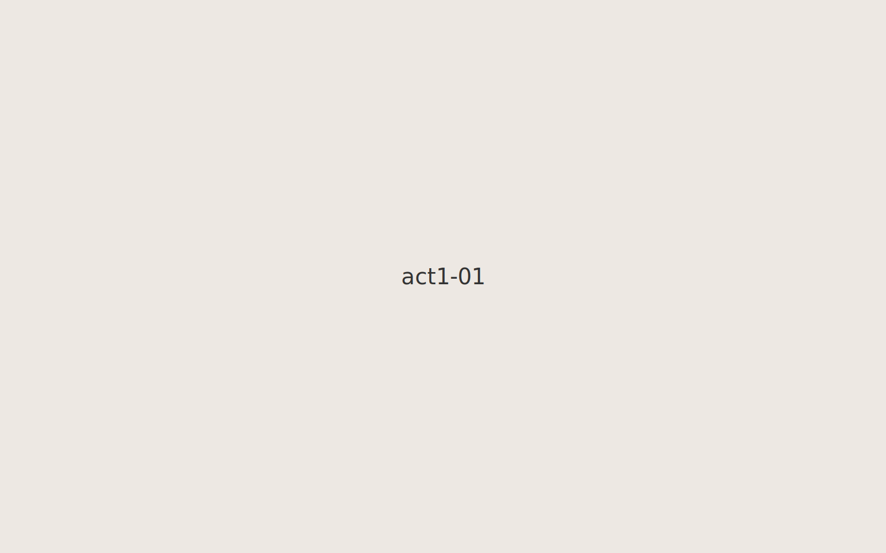
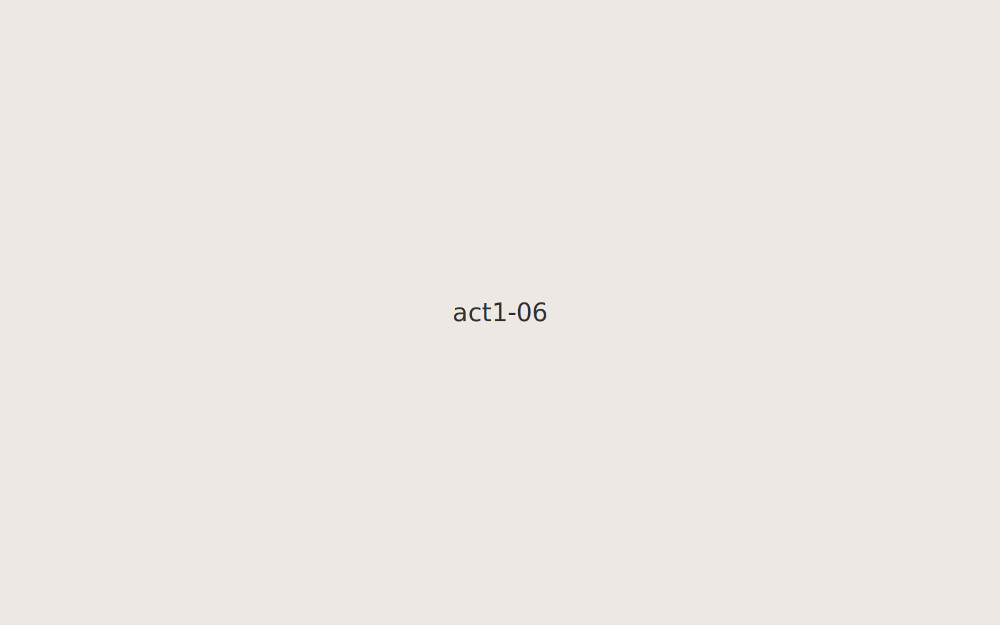
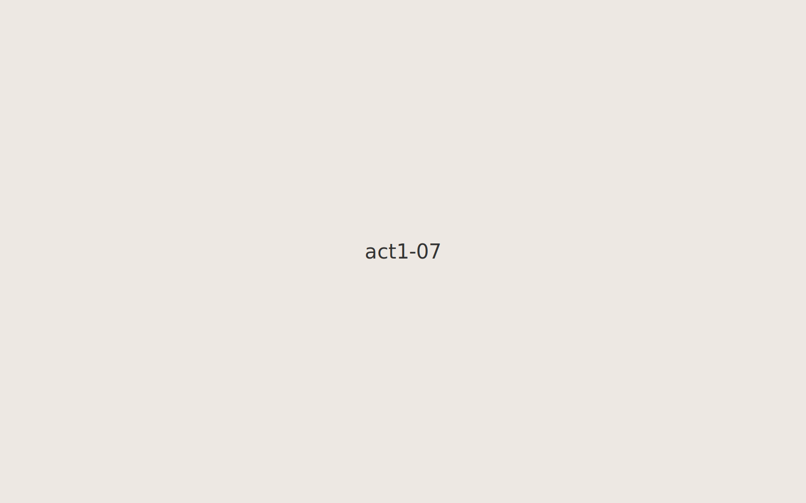

Packing a small suitcase.Waiting at the station.Family portrait before leaving.Night of goodbyes.Boarding the ferry.

Crossing the water at dusk.

A small packed room.Looking back through the window.A folded photograph carried along.Dawn on the horizon.